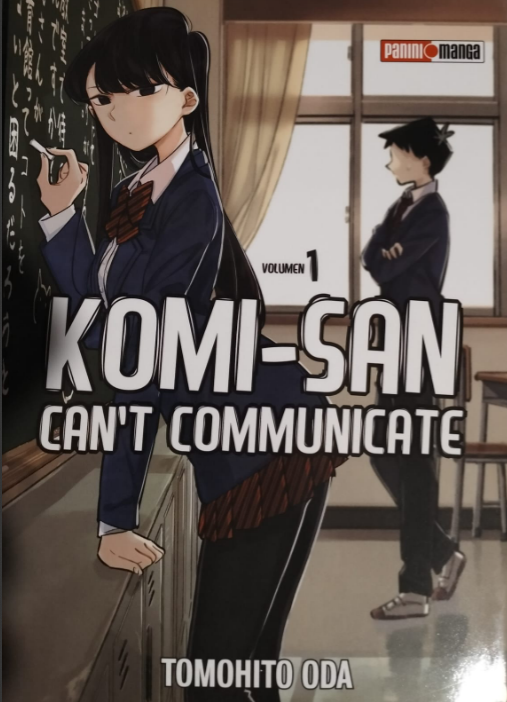
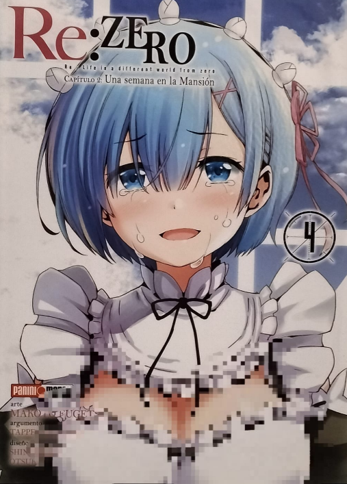

.png)

| üîπ Sh≈çnen (Â∞ëÂπ¥) Dirigido a: Chicos j√≥venes (aproximadamente de 12 a 18 a√±os). Caracter√≠sticas: Historias centradas en la acci√≥n, la aventura y la superaci√≥n personal. Protagonistas j√≥venes con un fuerte deseo de mejorar y alcanzar un objetivo. Uso frecuente de elementos de amistad, rivalidad y trabajo en equipo. Ritmo rápido con escenas de combate dinámicas y momentos de humor. Puede incluir elementos de fantas√≠a, ciencia ficci√≥n o deportes. |
| üîπ Sh≈çjo (Â∞ë•≥) Dirigido a: Chicas j√≥venes (aproximadamente de 12 a 18 a√±os). Caracter√≠sticas: Enfoque en las emociones, las relaciones personales y el crecimiento personal. Temas como el romance, la amistad y la autodescubrimiento son comunes. Narrativa enfocada en el desarrollo emocional de los personajes. |
| üîπ Seinen (ÈùíÂπ¥) Dirigido a: Hombres adultos j√≥venes (18+ a√±os). Caracter√≠sticas: Tramas más maduras y complejas, con exploraci√≥n de temas psicol√≥gicos y filos√≥ficos. Uso frecuente de violencia, gore o escenas expl√≠citas, dependiendo del contenido. |
| üîπ Josei (•≥ÊÄß) Dirigido a: Mujeres adultas j√≥venes (18+ a√±os). Caracter√≠sticas: Historias más realistas y con una perspectiva más madura de las relaciones humanas. Se centra en la vida adulta, el amor, el trabajo y las experiencias cotidianas. Relaciones románticas menos idealizadas y con mayor profundidad psicol√≥gica. |
| üîπKodomo (Â≠ê‰æõ) Dirigido a: Ni√±os peque√±os (menores de 12 a√±os). Caracter√≠sticas: Historias simples con mensajes educativos y valores positivos. Estilo de dibujo colorido y personajes expresivos para atraer a los ni√±os. Uso de situaciones cotidianas o de fantas√≠a para ense√±ar lecciones de vida. |